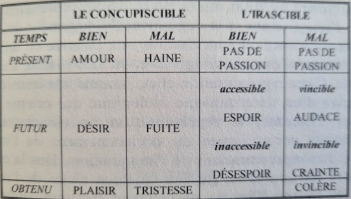

1. Avons-nous une âme ? 7
Le mouvement local est celui de A vers B. Le mouvement qualitatif est celui du chaud, du froid, de la variation d'énergie. Le mouvement quantitatif est le changement selon la quantité, lié à un principe intérieur. La nature est le principe propre du changement spécifique à chaque être. Pour toute chose naturelle, il existe une cause première responsable de son changement. A la différence de l'art où le principe est dans la tête de l'artisan, en dehors.
Avec le matérialisme et le spiritualisme : incapable de reconnaître qu'il existe une différence spécifique entre le vivant et le non-vivant.
âme = principe de vie et pas seulement la forme du corps, on l'appelle donc l'acte du corps. C'est un acte qui ne dépend d'aucun autre qui lui soit antérieur, on l'appelle donc l'acte premier.
2. A quoi sert notre corps ? 25
Le corps est le sujet de l'âme parce qu'il a la capacité de la recevoir, et parce qu'il lui donne les possibilités de répondre, par ses actes à lui, aux exigences de la perfection de l'âme.
Le corps a la vie, mais n'est pas vivant sans l'âme. Il reçoit sa forme de l'âme comme une matière naturelle et non inerte, une "puissance en appétit de vivre" (Physique, Aristote). Sans corps, l'âme n'est cause formelle de rien.
Si l'âme donne au corps qu'elle anime son essence et son existence, le corps donne à cette âme, la capacité unique et individuelle d'être le principe de vie de cet être vivant.
3. La distinction des puissances de l'âme. 35
L'âme est l'acte premier. En tant qu'acte premier, elle est un principe d'existence et d'essence.
La puissance de l'âme est, au contraire, de donner à la matière une diversité de fonctions qui la porte au sommet de sa puissance.
4. Naître, engendrer, mourir. 49
L'objet de la vie végétative, c'est l'aliment.
5. Connaître, c'est devenir l'autre. 59
On dit de cet acte qu'est la connaissance qu'il est immanent car il demeure à l'intérieur du sujet qui l'accomplit et le perfectionne.
Lorsqu'on voit, entend, goûte, sent, touche, imagine ou pense, on reçoit en soi la forme des choses extérieures. Mais on la reçoit sans la matière.
L'opération de connaissance, c'est pour la puissance, de devenir l'acte lui-même.
6. Les sens, première ouverture sur le réel. 71
La sensation est l'acte d'une puissance organique. L'organe sensoriel est proportionné à recevoir immatériellement le sensible. Cette proportion est une adaptation particulière et spécifique du sens à son objet propre.
Le sensible est relatif à cette proportion de l'organe. Il est propre quand il ne peut être perçu que par un seul sens. Il constitue l'objet formel de la sensation et spécifie l'acte de sensation. Il est commun quand il peut être perçu par plus d'un sens. Il modifie la sensation et lui permet d'atteindre une connaissance plus parfaite du monde environnant.
7. Les sens au service de l'intelligence. 83
Les conditions qui s'attachent à l'intelligence dans sa recherche de la vérité - Notre intelligence est appétit de vérité, c'est-à-dire que l'inclination de cette faculté l'ordonne à vouloir être adéquate au réel. C'est de cette façon que se définit la vérité qui est d'abord une réalité de l'intelligence avant d'être une propriété des choses extérieures à elle.
Les sens internes : le sens commun, l'imagination, l'estimative (ou la cogitative), la mémoire.
8. Le monde foisonnant de notre sensibilité intérieure. 113
Les sens internes reproduisent donc, en les représentant intérieurement, les objets des sens externes.
L'acte extérieur - la table est rouge - est l'objet formel du sens externe ; l'acte intérieur - voir le rouge de cette table - est l'objet formel du sens interne. On saisit ainsi la différence entre le sens interne et le sens externe.
L'objet du sens interne est, matériellement, l'acte du sens externe. Formellement, cet acte est perçu comme l'acte de connaissance d'une chose externe déjà connue.
9. Le sens commun. 125
10. La puissance de l'image. 137
Ce que nous appelons imaginer est souvent l'interaction de trois puissance : l'imagination, l'estimative - qui, chez l'homme, prend le nom de cogitative - et la mémoire qui est souvent éminiscence. Ces trois puissance ont un point de départ commun : le phantasme produit par le sens commun (qui distingue et assemble les 5 sens, ndlr).
Le rôle de l'imagination est de conserver et de reproduire (un phantasme, à partir de la matière donnée par le sens commun). 3 sens jouent un rôle plus important pour l'imagination : le toucher, la vue, l'ouïe.
Il arrive que l'imagination, en produisant un phantasme de ce qui est reçu, l'associe à un autre phantasme qui reproduit un objet absent. En sentant un parfum, on revoit la personne aimée qui le portait. En écoutant une chanson, on revit un évènement heureux ou malheureux. (NOTA. c'est le rôle attribué à la mémoire chez Proust : de relier et raccrocher les souvenirs les uns aux autres).
En raison de sa spiritualité, l'intelligence peut agir à l'intime des sens et élever leur acte, sans en changer la nature. Sous l'influence de l'intelligence, les sens internes produisent mieux et plus que ce qu'ils feraient s'ils étaient livrés aux seuls déterminismes de leur nature. C'est ainsi que l'imagination peut produire des phantasmes où sont associés différents éléments conservés par elle. Sous l'effet de l'intelligence, l'imagination unira des phantasmes jusqu'à créer une vie intérieure dans laquelle, grâce aux forces spirituelles de l'intelligence, l'imaginaire emplit la conscience psychologique.
11. Le jugement de la sensibilité. 153
La mémoire n'est pas la faculté par laquelle on se rappelle des sensations déjà perçues. C'est là le rôle de l'imagination. Mais dans l'image que rappelle l'imagination, la mémoire a un rôle bien précis : elle perçoit le passé en tant que passé.
Connaître ainsi, formellement, un ordre d'antériorité et de postériorité qui vient du mouvement, c'est saisir quelque chose dans le temps. Ce qui est l'objet propre de la mémoire.
La réminiscence est ainsi une recherche en ce qu'elle n'a pas lieu par hasard mais dans l'intention de parvenir à se souvenir. Le fait de cette recherche qui permet de parvenir à quelque chose d'autre ne peut exister que chez ceux qui ont la puissance naturelle de délibérer. - S. Thomas, De memoria et reminiscentia
12. Les vibrations de l'affectivité. 173
Il y a deux sortes d'inclination vers le bien. La plus élevée est celle qui appartient à la personne, c'est celle de l'intelligence qui, connaissant l'être, est capable de distinguer le bien qui convient en vérité à l'être. L'inclination qui répond à cette connaissance du bien est un appétit rationnel. C'est la volonté.
L'autre inclination relève des sens. Les puissances des sens internes, principalement la cogitative, peuvent connaître une chose sous son aspect agréable ; elles peuvent aussi bien la repousser si cette chose est connue comme désagréable. L'inclination qui découle de ces représentations de biens et de maux sensibles est l'appétit sensible.

L'inclination vers le bien est le fait de l'appétit. Il y a deux appétits : l'appétit qui n'est rien d'autre que l'ordre naturel d'une puissance à son bien et l'appétit élicité qui est la tendance à poursuivre un bien connu et à s'éloigner d'un mal connu.
Les mouvements des appétits sont des passions.
13. Etre passionné. 183
L'amour est l'inclination de l'appétit vis-à-vis du bien présenté. La cause de cette inclination est la connaturalité du bien à l'appétit.
Les effets de l'amour (...) L'amour tend à l'union. Cela est vrai même si, sous un autre aspect, on dira que le véritable amour est un don. Tout dépend du terme de la possession : soi-même ou l'autre. (...) L'inhabitation (...) L'extase est la disposition à "sortir de soi". (...) Le zèle est l'intensité de l'amour.
La haine est l'effet de l'absence de l'amour. L'effet ne peut être plus fort que la cause.
L'amour incline l'appétit en raison d'une connaturalité du bien ; le désir le fait avec plus de force et de véhémence en raison de l'absence du bien. De façon similaire, la fuite est non seulement la haine du mal, mais un mouvement de répulsion qui éloigne du mal à venir.
Il y a plaisir si l'acte que l'on accomplit est parfait.
Nous réservons souvent le nom de plaisir aux délectations sensibles et charnelles, et nous employons le mot joie pour les délices spirituels, créant ainsi une opposition entre plaisir et joie. (...) Si cet acte est pénétré d'humanité, comme doit l'être par exemple l'acte de l'amour conjugal, ce plaisir n'est pas seulement une délectation charnelle, il devient aussi une joie de l'âme et du corps.
La première cause du plaisir, c'est l'opération elle-même en tant qu'elle est parfaite. C'est pourquoi le plaisir ou la joie sont le signe de l'acte accompli.
La tristesse est cette passion qui vient de la présence du mal sensible. Quand le mal est dans l'âme et que nous en sommes conscients, nous nous en affligeons. Quand le mal attaque le corps, nous en souffrons : il y a douleur. La tristesse est donc dans l'âme, la douleur est dans le corps. Ce qui engendre la tristesse, c'est le désir. Comme la haine nait de l'amour, la tristesse vient du désir. La raison est la même : le mal n'est qu'une privation d'un bien.
La seconde soeur s'appelle Mater Suspiriorum, Notre-Dame des soupirs. Elle n'escalade jamais les nuages et elle ne se promène pas sur les vents. Sur son front, pas de diadème. Ses yeux, si on pouvait les voir, ne paraîtraient ni doux, ni perçants ; on n'y pourrait déchiffrer aucune histoire ; on n'y trouverait qu'une masse confuse de rêves à moitié morts et les débris d'un délire oublié. Elle ne lève jamais les yeux ; sa tête, coiffée de turban en loques, tombe toujours, et toujours regarde la terre. Elle ne pleure pas, elle ne gémit pas. De temps à autre elle soupire inintelligiblement. Sa soeur, la Madone, est quelquefois tempétueuse et frénétique, délirant contre le ciel et réclamant ses bien-aimés. Mais Notre-Dame des Soupirs ne crie jamais, n'accuse jamais, ne rêve jamais de révolte. Elle est humble jusqu'à l'abjection. Sa douceur est celle des êtres sans espoir... Si elle murmure quelquefois, ce n'est que dans des lieux solitaires, désolés comme elle, dans des cités ruinées, et quand le soleil est descendu dans son repos. Cette soeur est la visiteuse du Paria, du juif, de l'esclave qui rame sur les galères... de la femme assise dans les ténèbres, sans amour pour abriter sa tête, sans espérance pour illuminer sa solitude ; (...) de tout captif dans sa prison ; de tout ceux qui sont trahis et de tous ceux qui sont rejetés ; de ceux qui sont proscrits par la loi de la tradition, et des enfants de la disgrâce héréditaire. Tous sont accompagnés par Notre-Dame des Soupirs. Elle aussi, elle porte une clef mais elle n'en a guère besoin. Car son royaume est surtout parmi les tentes de Sem et les vagabonds de tous les climats. Cf Baudelaire qui, dans Les Paradis artificiels, imagine les trois déesses de la tristesse.
14. Combattre. 225
C'est pourquoi l'irascible est un appétit de combat. On lutte pour posséder un bien ; on se bat pour éloigner un mal. Les deux grandes passions de l'irascible seront donc la crainte qu'il faut vaincre et la colère qu'il faut maîtriser. Les passions de l'irascible ont ce caractère spécial : elles viennent du concupiscible. Pour supporter le labeur du combat, il faut aimer le bien ou haïr le mal.
La colère est une passion bien spéciale. Elle est le produit complexe de plusieurs passions appartenant tant à l'irascible qu'au concupiscible. On peut la définir comme une certaine tristesse devant le mal présent.
Les passions de l'irascible portent sur le bien ardu ou sur le mal difficile à vaincre. Cette formalité de l'ardu qui s'ajoute à l'appétit du bien ou à la fuite du mal exige, au niveau de la sensibilité, une puissance différente de l'appétit concupiscible.
15. La lumière de l'intelligence. 247
L'intelligence est la faculté par laquelle nous saisissons le réel et nous pénétrons au coeur de l'être. La première qualité de l'intelligence est donc sa capacité de contemplation.
L'être est vrai dans la mesure où il réalise dans son existence la réalité qu'il a dans l'intellect divin. N'est-ce pas platonicien ?
16. L'activité contemplative de l'intelligence. 265
Un paragraphe sur l'être. Possible que ce soit une synthèse de la métaphysique de l'être pour Aristote.
L'être, parce qu'il est une détermination essentielle est connaissable. Il y a donc une relation qui s'ajoute aux notions d'essence et d'existence. Il est fondement de vérité. La vérité, on vient de le voir, est une adéquation de l'intelligence au réel. Mais le réel est lui-même vrai s'il est adéquat à l'intelligence divine qui le crée. Cette vérité de l'être est le fondement de la vérité dans l'intelligence. L'être est aussi le bien. Tout être tend à la perfection conforme à sa nature. Le bien est l'opération parfaite de l'être et lui permet de rejoindre, dans son existence, le principe d'où il tire son origine. Si tout ce qui est réel ressemble, d'une façon qui est conforme à sa nature, au principe d'où il tire son origine, tout être réel est incliné à une opération qui lui permet de rejoindre la cause de laquelle il émane. Cette tension, cette inclination, cet appétit est la tendance vers le bien. Tout être, vrai et bien, est beau selon la perfection qui convient à sa nature. La beauté exprime dans l'univers l'ordre et la mesure. Elle est dans la création la splendeur de la vérité qui fait la joie de l'intelligence qui contemple et de la volonté qui aime.
Dire, c'est pour l'intelligence former une représentation parfaite de ce qu'elle reçoit du réel. Cette représentation est un concept ou encore un verbe. (...) Ce concept est encore un verbe, c'est une parole intérieure par laquelle l'intelligence manifeste en son intimité - dans le "verbe du coeur", dit S. Thomas d'Aquin - la vérité de l'être devenu, pour elle, la vérité du connaître. Le concept n'est donc pas un mot, une expression verbale ni une façon de parler. C'est la manifestation de l'acte intime de l'intelligence devenue, dans le secret de son royaume, l'acte du réel émané de l'Être premier.
17. Ordonner nos actes et nos oeuvres. 279
18. Etre libre pour aimer. 289
Le bien cause le mal, non comme une cause accidentelle, par exemple comme le fait de creuser un trou est la cause de la découverte du trésor et le fait d'aller au marché, celle de la rencontre du débiteur. Le bien est cause du mal en tant qu'il détermine la privation dont l'être est affecté. L'être n'est privé que de ce qu'il devrait avoir, c'est-à-dire de son bien. Il n'y a donc de mal que vis-à-vis d'un bien que l'on devrait avoir.
2024-09 : Constituendi
Retour à l'accueil des fiches de lecture
Retour à l'accueil général